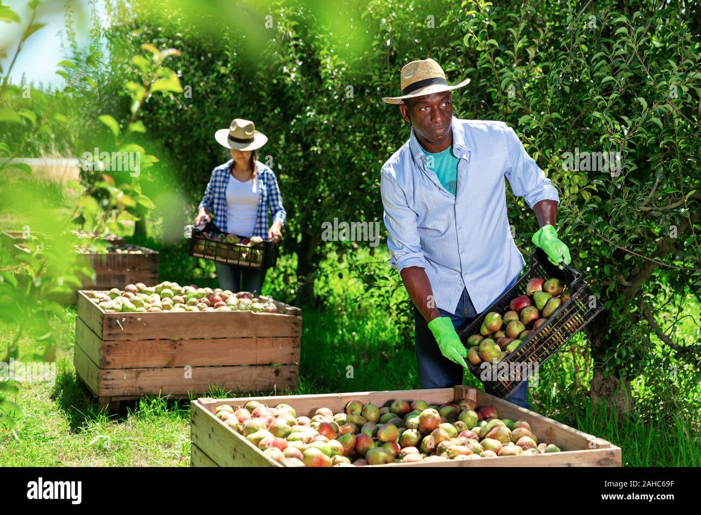
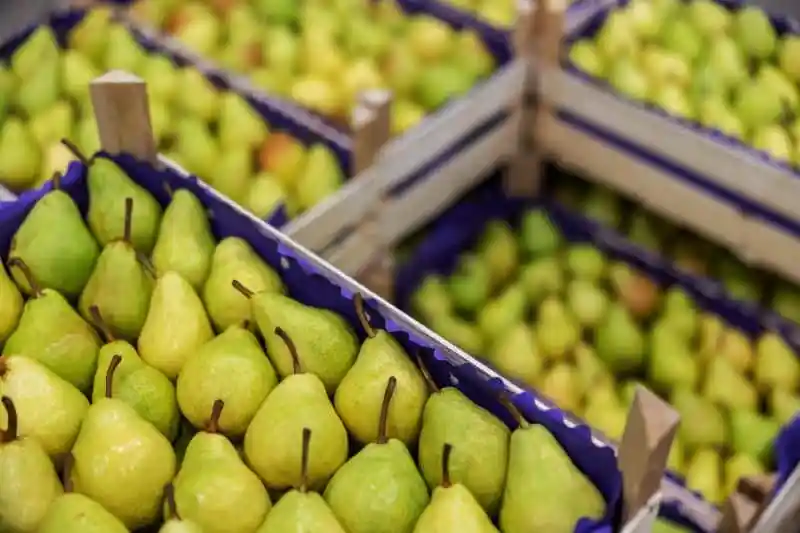
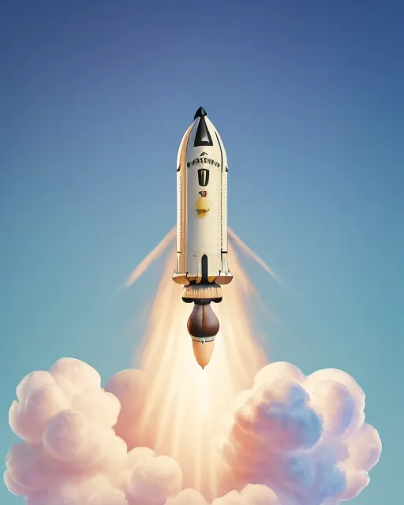
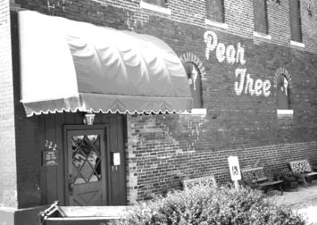

At Pear Inc., we are uncompromising in our mission to deliver to our customers the freshest and most exquisite pears on the planet—and beyond. The cornerstone of this mission is our avant-garde, hyper-efficient supply chain ecosystem. Our process commences with our global network of dedicated procurement specialists, a battalion of hundreds who leverage advanced relationship management strategies to forge synergistic alliances with elite pear cultivators across every continent and hemisphere.
When a pear order is initiated, our proprietary, AI-driven predictive analytics platform activates. This state-of-the-art machine learning model conducts a real-time, multidimensional analysis of agronomic variables—including microclimate temperature gradients, humidity indices, soil pH levels, and even pollination patterns—to algorithmically pinpoint the optimal pear. Each fruit is identified down to its GPS coordinates and tracked via RFID and blockchain technology to ensure traceability and authenticity, guaranteeing perfect alignment with the gastronomic profile of the intended culinary masterpiece.
The designated farmer then engages in just-in-time harvesting protocols, executing a precision pluck that adheres to our zero-bruising mandate. The pear is immediately encapsulated within an anti-static, shock-absorbent, temperature-controlled container engineered to prevent micro-abrasions and preserve cellular integrity.
Leveraging our exclusive partnership with SpaceX, the pear is expedited via a custom-built, reusable orbital-class rocket. This ensures ultra-low latency in our global distribution network and strict compliance with our 30-minute quality assurance window. The rocket utilizes suborbital flight paths and ion propulsion technology to minimize transit time and environmental impact.
Upon atmospheric re-entry, the rocket performs an autonomous precision landing at our dedicated hyperloop-connected docking station, strategically situated adjacent to our culinary innovation center. Here, our elite team of gastronomic operatives initiates the cross-docking process, swiftly transferring the pear to the kitchen while maintaining an unbroken cold chain to preserve its organoleptic properties.
Throughout this end-to-end logistics operation, we adhere to rigorous Standard Operating Procedures (SOPs) and employ continuous quality control checkpoints using Six Sigma methodologies and real-time data analytics. This ensures the pear remains in immaculate condition, free from any mechanical stress, bruising, or degradation of quality attributes.
We are confident that our overengineered logistical framework and relentless pursuit of perfection deliver an unparalleled pear experience. Our customers not only taste the difference but become part of a supply chain revolution that redefines freshness and quality in the culinary world.
